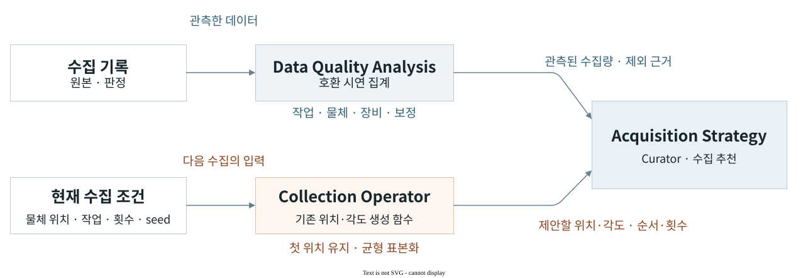

Curator · 다음 수집
Acquisition Strategy
수집한 데이터의 조건과 판정을 다음 수집안에 연결하는 기능이다. 과거 기록에서 비교할 수 있는 시연을 구분하고, 현재 물체 위치와 수집 예산에 맞는 위치·각도·순서를 제안한다.
구현 원리
과거 기록과 현재 조건의 결합
수집 시기나 설정이 다른 기록을 하나의 실적으로 합치면, 현재 조건에 사용할 수 있는 데이터가 얼마나 있는지 알기 어렵다. 기록마다 원래 작업·물체·장비·보정 조건을 유지하고 현재 수집 조건과 맞는 성공 시연을 따로 집계한다.

비교 가능한 관측의 분리
현재 수집 조건에 유효한 시연이 얼마나 있는지 파악하려면 비교할 기록의 범위를 먼저 맞춰야 한다. 같은 녹화를 중복 집계하지 않고, 작업 종류와 로봇·물체·파지 프로필, 카메라·보정 조건을 현재 선택과 대조한다. 조건이 맞고 사람의 작업 판정이 PASS인 시연을 현재 수집의 실적으로 집계하며, 나머지 기록에는 제외 이유를 남긴다.
현재 위치에서 시작하는 수집안
현재 물체 위치를 첫 조건으로 유지하고, 주어진 횟수와 seed로 위치·각도를 생성한다. 집기는 같은 작업영역에서 조건을 분산하고, 옮기기는 작업영역 사이의 순서를 구성한다. 추천 결과에는 관측된 수집량과 제안할 조건·순서를 함께 저장한다.
현재 좌표 생성은 기존 균형 표본화 규칙을 사용한다. 관측 수집량은 호환성과 추천 이유를 설명하며, 정책 개선 효과에 따라 좌표의 순위를 학습하는 기능은 연구 범위이다.
추천 선택에서 실행 계획으로
Collection Operator에서 추천을 요청하면 기존 수집 기록을 찾아 현재 조건과 비교한다. 선택한 추천은 현재 ASSISTED 작업 초안에 반영한다. 계획을 확정할 때 같은 원본·장면·설정을 다시 읽고, 실제 생성된 위치·회전각·표본화 조건이 선택한 추천과 일치하는지 대조한다.
추천과 실제 실행 계획이 서로 다른 조건을 사용하지 않도록 하는 연결이다. 사용자가 수정한 직접 입력·고정 조건은 유지하며, 오래된 추천은 현재 초안을 덮어쓰지 못한다. 추천 적용과 계획 생성은 구현됐으며, 실제 재수집·정책 개선 효과는 실행·평가 근거로 확인한다.
기록 탐색·추천 선택·계획 생성 구현 ↗기존 계획의 갱신
미관측 조건의 첫 수집
원래 수집 계획이 보존된 경로에서는 계획한 조건과 실제 기록을 대조한다. 실행 자격이 확인됐지만 관측하지 못한 조건을 찾아 첫 시도를 제안하고, 선택한 제안을 기존 Collection Operator의 작업 초안 변경 요청으로 변환한다.
이 경로의 목적은 계획에서 빠진 관측을 채우는 것이다. 추천에는 관측 사실, 제안 이유와 변경할 조건이 연결되어 있어 사용자가 어떤 근거로 계획이 바뀌는지 확인할 수 있다.
조건별 집계와 초안 변경 구현 ↗정책 피드백
취약 조건에 대한 표적 수집
데이터 수량이 충분해도 정책이 특정 위치나 자세에서 실패할 수 있다. 목표 폐루프는 같은 시험 조건에서 얻은 정책 결과를 시연의 조건과 대조하고, 다음 수집에서 보강할 조건을 정하는 구조이다.
현재 오프라인 표적 선택은 실패 근거와 조건별 수집량을 받는다. 실행 자격과 비교 관련성이 표시된 실패 조건 중 성공 시연이 기준보다 적은 조건을 골라 보고한다. 실제 Rollout의 실패 분석부터 재수집·재학습까지 연결하고 효과를 측정하는 단계가 이어진다.
수집 전략의 비교
같은 수집 예산에서의 정책 개선
검증할 가설은 정책 평가에 근거한 표적 수집이 기존 균형 수집보다 같은 추가 수집 예산에서 더 나은 정책 결과를 만드는가이다. 다음 두 경로를 같은 조건으로 비교한다.
균형 수집
정해진 위치·각도·작업 조건에 추가 수집 예산을 배정한다.
표적 수집
같은 예산을 정책 평가에서 드러난 취약 조건에 배정한다.
두 데이터로 만든 정책은 같은 시험 조건에서 성공·실패·중단과 소요 시간을 비교한다. 수집량, 준비·복구 비용과 학습 조건도 함께 남겨, 더 많은 비용을 쓴 결과를 수집 전략의 이점으로 해석하지 않는다.
향후 수집 전략을 비교하기 위한 연구 설계이다. 현재 확인 가능한 학습 결과는 Policy Learning의 오프라인 비교에서 살펴볼 수 있다.
관련 시스템
수집안의 실행Collection Operator
위치·각도 설정과 로봇 시연 수집.
Recorder · Curator
동기화 기록과 학습 데이터 구성.